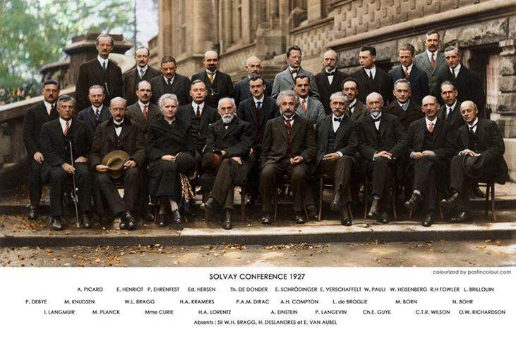

<div class="container mt-4">
	<div class="row">
    <div class="col-lg-4">
      <!-- <h2>sunset</h2> -->
      <div class="card border-0">
				<div class="card-body">
	    	<h4 class="card-title">
        东方欲晓莫道君行早
        </h4>
	    	<p class="card-text">
        <a class="mr-1" target="_blank" href="https://twitter.com/13Gyr"><i class="fa fa-twitter-square" style="font-size:22px;"></i></a>
        <a class="mr-1" target="_blank" href="https://www.facebook.com/profile.php?id=100003578597034"><i class="fa fa-facebook-square" style="font-size:22px;"></i></a>
        <a class="mr-1" target="_blank" href="http://youtube.com"><i class="fa fa-youtube-square" style="font-size:22px;"></i></a>
        <a class="mr-1" target="_blank" href="http://steamcommunity.com/profiles/76561198263933130"><i class="fa fa-steam-square" style="font-size:22px;"></i></a>
        <a class="mr-1" target="_blank" href="http://last.fm/user/foyoko"><i class="fa fa-lastfm-square" style="font-size:22px;"></i></a>
        <a class="mr-1" target="_blank" href="http://music.163.com/#/user/home?id=6674842"><i class="fa fa-caret-square-o-right" style="font-size:22px;"></i></a>
        <a class="mr-1" target="_blank" href="https://www.douban.com/people/57598693/"><i class="fa fa-pencil-square" style="font-size:22px;"></i></a>
        <a class="mr-1" target="_blank" href="http://github.com/jundec"><i class="fa fa-github-square" style="font-size:22px;"></i></a>
         
        </p>
				</div>
			</div>
			<br>
    </div>

		<div class="col-lg-8">
			<div class="card border-0">
				<a href="http://www.hilliontchernobyl.com/solvay1927.htm" target="_blank">
					
				</a>
			</div>

    </div>
	</div>

<div class="table-responsive">
<table class="table table-white">
  <thead>
    <tr class="bg-white text-dark text-center">
      <th scope="col" style="border:none !important;">Radio</th>
      <th scope="col" style="border:none !important;">Optical</th>
      <th scope="col" style="border:none !important;">Gravitational Waves</th>
    </tr>
  </thead>
  <tbody>
    <tr>
      <td>
      <ul> 
    <li><a target="_blank" href="https://www.skatelescope.org">Square Kilometre Array (SKA)</a></li>
    <li><a target="_blank" href="https://chime-experiment.ca/en">Canadian Hydrogen Intensity Mapping Experiment (CHIME)</a></li>
    <li><a target="_blank" href="https://fast.bao.ac.cn">Five-hundred-meter Aperture Spherical radio Telescope (Fast)</a></li>
    <li><a target="_blank" href="https://www.cosmos.esa.int/web/planck">Planck</a></li>
    <li><a target="_blank" href="https://map.gsfc.nasa.gov/">Wilkinson Microwave Anisotropy Probe (WMAP)</a></li>
      </ul> 
      </td>
      <td>
      <ul>
    <li><a target="_blank" href="http://www.sdss.org">Sloan Digital Sky Survey (SDSS)</a>            </li>
    <li><a target="_blank" href="https://www.darkenergysurvey.org">Dark Energy Survey (DES)</a></li>
    <li><a target="_blank" href="http://pfs.ipmu.jp/index.html">Prime Focus Spectrograph (PFS)</a>   </li>
    <li><a target="_blank" href="http://desi.lbl.gov/">Dark Energy Spectroscopic Instrument (DESI)</a> </li>
    <li><a target="_blank" href="https://www.cosmos.esa.int/web/euclid/home">Euclid</a> </li>
    <li><a target="_blank" href="#">China Space Station Telescope (CSST)</a></li>
      </ul> 
      </td>
      <td>
      <ul> 
    <li><a target="_blank" href="https://www.ligo.caltech.edu">Laser Interferometer GW Observatory (LIGO)</a></li>
    <li><a target="_blank" href="https://lisa.nasa.gov">Laser Interferometer Space Antenna (LISA)</a></li>
    <li><a target="_blank" href="http://tamago.mtk.nao.ac.jp/spacetime/decigo_e.html">DECi-hertz Interferometer GW Observatory (DECIGO)</a></li>
    <li><a target="_blank" href="#">Big Bang Observer (BBO)</a></li>
    <li><a target="_blank" href="http://www.et-gw.eu">Einstein Telescope (ET)</a></li>
      </ul> 
      </td>
    </tr>
    <tr>
    </tr>
   </tbody>
</table>
</div>

</div>
